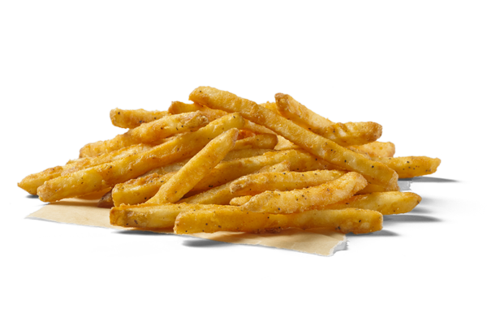

Patatas Fritas
Costillas al Horno
Alitas de Pollo
Patatas Fritas Caseras

Ingredientes
3 ó 4 patatas (300g.)
4 dientes de ajo
Aceite de oliva
Sal
Elaboración (Pasos)
Calentar aceite en una sartén
Añadir las patatas cortadas, la sal y los ajos.
Freír al gusto.
Servir el plato.